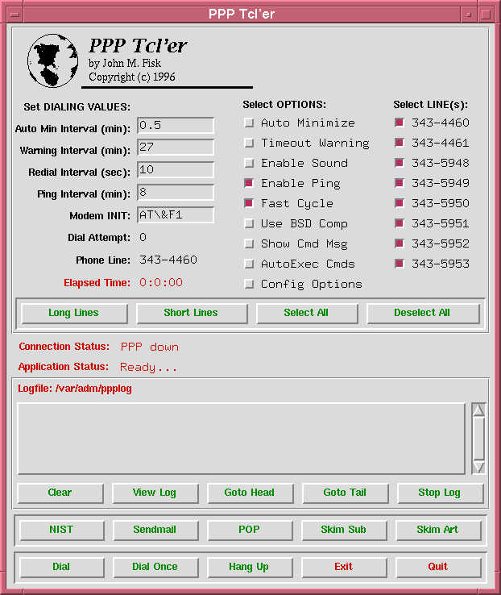
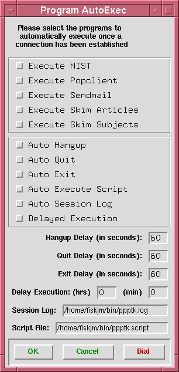
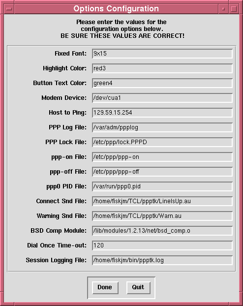

PPPTK - A Tcl/Tk Front-End for PPPD
PPPTK - A Tcl/Tk Front-End for PPPD
OK, let's take a better look at this little program. Here's a screen dump of the most recent version of the program:

I've been using a series of BASH shell scripts to set up a PPP connection but after school ended in June, I really wanted to create a Tcl/Tk front end for all of this stuff. The features that I wanted included:
Well, I managed to get all those things set up. In addition, once a connection has been established, it starts a timer which indicates the online time -- AND, if a connection is up, iconizing the program causes the online time to be displayed in the icon's title.
Seriously fun... :-)
I also wanted to be able to set up an auto-dial facility that would do:
I did this because I wanted to have this program run unattended. Currently, it can be set to perform a variety of functions at some specified time, log its activity, and then optionally hangup or quit. This is nice because it can be set up to run in the middle of the night when traffic is relatively lighter.
Here's a screen dump of the AutoExec dialog:

And finally, I wanted to be able to do some basic configuration during run time. This would include changing fonts, colors, file locations, and so forth -- rather than relying on hardcoded values. Here's a screen shot of the Config dialog:

As I mentioned before, this has been a LOT of fun to work on (mostly during those rare spare moments late at night). If you've enjoyed doing a bit of shell programming and want to do something under X then I'd strongly recommend doing a bit of playing with Tcl/Tk. I'd also commend to you one of the excellent books on the subject: either John Ousterhout's book Tcl and the Tk Toolkit or Brent Welch's book Practical Programming in Tcl and Tk. Either of these are marvelous books although you'll also want to have a set of the Tcl/Tk manual pages for full descriptions of the language.
Well, have I got you interested...?
Hope so! :-)
This has been a HUGE amount of fun and it constantly amazes me that not only Tcl/Tk, but also an ever-increasing number of add-on's are freely available to anyone interested in using them. Try selling that one to the guys in Redmond, WA...
Finally, if anyone is interested, I'd be happy to send a copy of the program sources. Currently, this is strictly a home-grown program that has been significantly customized to my own needs. I get 'Net access through the local University which uses 8 phone numbers for a total of 120 lines. The first 32 lines have a 4 hour time limit and the rest have a 30 minute time limit. So... you can understand why this has become pretty specialized. Still, there might be something useful to someone and I'd be delighted to hear from anyone regarding comments and criticisms about this.
Drop me a note at fiskjm@ctrvax.vanderbilt.edu if you're interested.
Thanks!
John